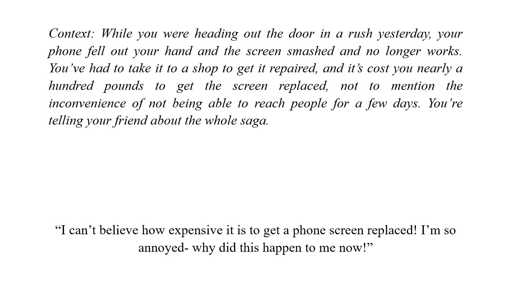
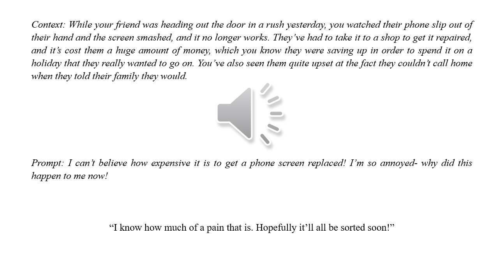
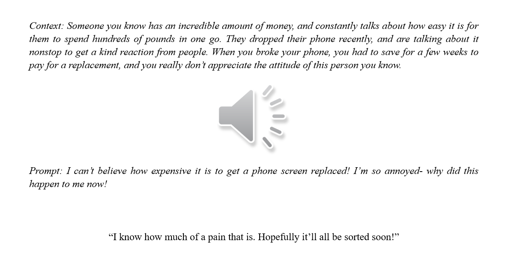

Very often, we say things that we do not mean, and we often do so deliberately. Sometimes, we aim to not let the truth escape, and we deceive a listener. Sometimes, we intend the listener to understand what we say as having a different meaning, like when we are sarcastic (and indirectly criticise something) or when we are ironic (intending a phrase to be understood with a usually opposite sentiment). Other times, however, we simply do not mean what we say, and don’t signal anything else to a listener apart from that we don’t mean it.
Say, for example, Person A and Person B do not like each other, and have never liked each other. Both are aware of the other’s dislike. Person B has recently broken their arm, and while those around have been offering their support and sympathies, they do not expect to receive such a reception from Person A. Person B approaches Person A, and A says “I hope you feel better soon,” but makes no attempt to sound genuine in their response. It is clear to all parties that A does not mean what they are saying, but does not signal an alternative meaning, and does not deceive B into thinking that they do hope B feels better soon. It is this kind of insincerity, which I have labelled “Plain Insincerity,” that I explore in this research.
I decided to explore plain insincerity in relation to empathy, partly to build on my undergraduate research which explored the acoustic correlates of empathy, and partly because this is intuitively a context in which plain insincerity could arise.
More specifically, I wanted to see if there was a more effective way of measuring and capturing insincerity in speech (specifically empathetic speech) than the approaches that had previously been used. Some approaches, like using neural networks, had high accuracy in identifying insincerity, but the measures that they used to identify insincerity had no relation to the kinds of things that we as humans pick up when we are listening to others, like pitch, duration, and word stress. (Technical explanation: neural network approaches can reach well over 85% accuracy, but using measures such as melspectrogram, MFCCs, and spectral centroids, which are all low-level measures that do not correspond to correlates)
The other approaches that measured what we call acoustic correlates, and can be things such as duration, pitch, speech rate, etc., had trouble agreeing on what the relevant correlates for insincerity are, although measuring the correlates that we actually perceive in speech is more useful when investigating the perception of something. Some find pitch to be important, but can’t agree on whether pitch is increased or decreased. The case is similar with duration and speech rate, where increases and decreases are found to be significant by different studies. Some papers argue that insincerity is all about creating contrasts between the insincere phrase and the phrase that came before. The variations between papers could be for a number of different reasons, such as the methodology of the experiments or the language/culture that they are found in, but the main potential reason, and the subject of this research, seems to be the way that insincerity is being measured. Almost all of the previous studies rely on a linear model of insincerity; that is, if you change a correlate (e.g. increasing your duration, or decreasing your pitch), there is a threshold at which an utterance changes from sincere to insincere. However, it doesn’t seem to work like that, and my research aimed to demonstrate that this wasn’t the best approach. (Technical explanation: linear models proved insufficient, and studies such as Rakov and Rosenberg’s 2013 study, which used unsupervised k-means clustering, demonstrated that nonlinear machine learning approaches such as the k-Nearest Neighbours classifier that I used, could capture insincerity much more effectively)
The first thing that I had to do was to collect data that I could use in the study. To control for variation between how people respond to others, I decided to record two separate prompters: one male and one female. That way, the group of 20 responders (10 male and 10 female) could be split into responding to male and female prompts (5 of all possible male/female prompt/response dialogues), and everyone would be responding to the same two people.
The prompters were given a PowerPoint presentation and asked to navigate at their own speed, with slides that looked like this:
They were allowed to repeat ones they weren’t happy with, and then the audio was trimmed and put into other PowerPoints for the responders, who were given a context, an audio, and a response. The only thing that changed between conditions was the context, as you can see in the two images below:
 The recordings were collected, trimmed to the target utterance (here, “I know how much of a pain that is” is the target, and the rest of the production just stops the participant from focusing on it too much), and various measurements were taken, including those relating to pitch, duration, and what I termed “Alternative Pattern”, which is just when someone changed the expected pattern of what they were saying. The measurements were condensed into mean sincere and insincere values for each speaker, and the results were analysed using a linear statistical model.
…and there was not much. Most of the results showed nothing significant whatsoever, and the things that were significant were very speaker-dependent. What was interesting, thought, is the alternative pattern measurement (which no previous studies I looked at measured) varied significantly between contexts, which added to the idea that instead of trying to look for a universal linear way of producing insincerity, we should be looking at a non-linear approach.
For the non-linear part, I used a k-Nearest Neighbours Classifier. To explain what that is, have a look at the picture. In the picture, we have triangles and circles, and we want to figure out if our star in the middle is secretly a triangle or a circle. To do so, under the idea that similar things group together, we look at what its nearest neighbours are. If we set the classifier to look at the 7 nearest neighbours, we get four triangles and three circles, so we might assume that the star is secretly a triangle. If we look at the 3 nearest neighbours, we get three circles and no triangles, and we might assume that the star is secretly a circle. The model’s accuracy is determined by how well it can guess if what it’s looking at is a star or a circle. To make a k-Nearest Neighbours model work, we need to figure out which measurements to include, and how many neighbours we should look at. In the classifier study, the circles might be sincere utterances, and the triangles might be insincere ones, and the distances that they are from one another are determined by the different measurements we took (which was 18, so we wouldn’t be able to put it on a two-dimensional graph like in the image). (Technical explanation: k-NN written in Python with k=5 (k=3 and k=3 were less accurate), with a Minkowski Distance Metric of p=2. The data set was 20 rows with 18 dimensions that could selectively be included by the user, and the training/test split was 75%/25%).
The results were a lot more promising! Lots of pairs of correlates achieved 70% accuracy, some combinations of more than two achieved 80%, and the best combination of correlates achieved 90% accuracy, which far surpasses previous approaches, and makes very clear that the linear approach that most correlate-based studies used was indeed not an appropriate way of capturing insincerity in speech.
So why is this? The most convincing possibility seems to be that in order to express insincerity, speakers need to work around the emotions that they’re expressing at the same time (like empathy), by using the resources that are left over in terms of correlates, and they do that in different ways from one another, which is why we can’t just make one linear model that accounts for all expressions of insincerity.
The final piece of the puzzle was to answer the question of whether the classifier approach actually modelled what people were picking up when listening to someone being insincere. Sometimes, a machine learning model can find relationships between data that humans can’t, and while that can be extremely useful in some fields, if we’re trying to replicate what people are doing when they speak, and what people hear when they listen, it would not be useful. Therefore, I set up a perceptual validation study, to make sure that my classifier was doing what I thought it did.
To do so, I had a look at the mean for each measurement for the speakers (sincere and insincere), and selected samples from the speakers best matched their sincere and insincere means. I also selected the worst matches for four of the speakers (two males and two females) to include in the study, and some samples from two speakers where I had edited certain measurements (e.g., duration or pitch) to match the opposite condition for the sample (so the insincere correlates were edited to match the sincere measurements for that speaker).
The participants had to rate the samples from -2 (not sincere) to +2 (sincere), and were also asked to write how they made their decisions about what was sincere or insincere. The results were promising. Participants were able to tell the difference between the sincere and insincere samples to a high degree of accuracy, particularly with the ‘best match’ samples. For the worst matches (which had a small sample size), participants correctly identified sincere and insincere samples for the male speaker, but for the female speaker they rated both as sincere. It was found that the gender of the participant did not influence these, meaning that both male and female listeners followed this pattern of rating male and female speakers. For the resynthesised samples, individuals varied significantly on how they rated the sincerity or insincerity, and there was a significant difference between the ratings of the male speaker and the female speaker. When looking at the free response, most of the participants made reference to “tone of voice,” some made reference to “emphasis,” and two admitted that they felt like they were guessing. The results and the comments line up with the results from the classifier, which means that it was not just finding patterns that actual speakers were not picking up.
Firstly, it’s necessary to do some more exploring of whether this non-linear approach to capturing insincerity holds true for more than just the data that I collected. It would also be useful to see if this expands beyond plain insincerity and towards irony and sarcasm, which are other types of insincerity. We could also look at whether or not these results hold up in natural, free-flowing conversation, rather than scripted dialogues.
The thesis that I wrote about this research (which started in October 2021, and ended up at a whopping 89 pages) was submitted in May 2022, and I passed my viva in June. I was awarded the MPhil with no corrections to the thesis, which is equivalent to a high distinction. I graduated from Cambridge (for the second time) in July 2022, and this research is currently being split into two separate papers for publication that I am working on with my supervisor Dr Calbert Graham, without whose invaluable advice and guidance I would not have been able to do this work.
Sometimes, when someone we care about is in a situation of emotional distress or discomfort, we wish to signal to the other person that we understand how they feel by ‘feeling with’ them. This is empathy, which is not the same as sympathy (a feeling of pity for another person), or compassion (a feeling of sympathy/empathy accompanied by a feeling of needing to act, whether this is followed through with or not). When we speak empathetically, we speak with a certain tone of voice, and it is this phenomenon that I investigated.
In this research, I wanted to investigate whether there was a way of capturing empathy in speech, particularly relating to British English. Previous studies had found a number of different markers of empathy across different acoustic correlates (parts of a speech signal, such as duration and pitch) in different languages and versions of English. Some studies found decreased speech rate and reduced pitch, as well as some mimicry of intonation and voice quality. It was assumed that I would find similar in British English.
Ten participants (five male and five female) were selected for this study, and put into male/female pairs and asked to read 8 different dialogues. Each dialogue had a short context like “A and B are discussing difficulties in a relationship.” The 8 dialogues were split into four empathetic and four non-empathetic, with a target phrase that was shared across both, including examples like “I know where you’re coming from” (either a conversation asking for directions or a situation of emotional distress) and “that’s hard” (either a maths problem or a situation of emotional distress). Two of the target phrases were longer, and two were shorter.
When the results were statistically analysed, the ways in which people produced empathetic utterances appeared to depend on the length of the utterance that they were producing. For longer utterances, participants seemed to decrease their pitch span and flatten their pitch contour as a whole, whereas for shorter utterances, participants appeared to rely more on local-level duration change (i.e. of syllables or segments). I also measured creaky voice, since voice quality can be used as a tool to signal emotions in speech, but there was no difference between conditions, only between male and female speakers (male speakers used it more).
The next part of this research was a perception study, which aimed to see if empathetic correlates could be replicated by adjusting non-empathetic utterances. Pitch level and pitch contour were editing by increasing or decreasing different points in the production, and duration was also manipulated by increasing/decreasing the accented syllable. The samples were piloted to check how natural they sounded, with 80% of participants having to agree for the sample to be passed as natural, and 85 samples passed.
Participants were given the samples in a random order, and were asked to rate them on a 5-point (Likert) scale, going from 0 (not empathetic) to 4 (empathetic). 33 participants (20 female and 13 male) completed the survey. The results were collected and analysed statistically (in SPSS). It was found that, as with the production study, duration of the stressed segment affected perception of empathy in shorter utterances. Pitch variations did not show a significant difference between conditions for any utterances, unlike in the production study.
This could have happened because of issues with making the samples sound 100% natural, or because the samples had been removed from their contexts. Some participants said that they were guessing, and others said that they made their decisions based on what they thought the other person was going to say next. One participant said that she found the female voices to sound more empathetic across the board; there was a significant difference in ranking for one of the male samples, which could support the idea of a gender-based difference in empathy perception.
I presented this work at the Undergraduate Linguistics Association of Britain conference (held virtually) in 2021, and the dissertation was subsequently published in the conference proceedings. I was awarded a first-class mark for the research, which contributed to being awarded a first-class undergraduate degree in Linguistics from the University of Cambridge (King’s College).